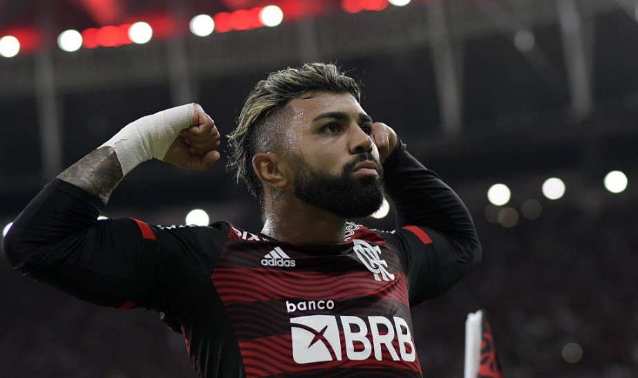
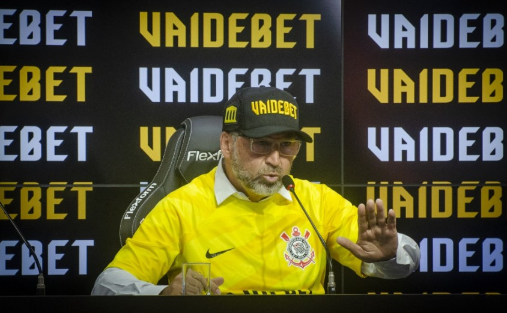
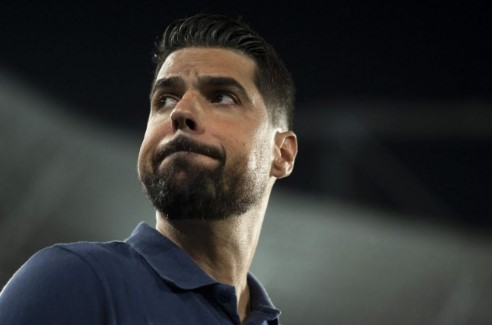

SITE DA FIEL
NOTÍCIAS
JOGOS
HISTÓRIA
TÍTULOS
FIQUE POR DENTRO DAS NOTÍCIAS DO TIMÃO!
PRESIDENTE REVELA SE DESEJA CONTAR COM
GABIGOL NO CORINTHIANS PARA 2025; VEJA

AUGUSTO MELO FALA SOBRE FUTURO DE YURI ALBERTO NO CORINTHIANS; SAIBA MAIS
CORINTHIANS NOTIFICA VAIDEBET POR TRÊS TÓPICOS
ENVOLVENDO A RESCISÃO DO CONTRATO; SAIBA TUDO

CORINTHIANS TEM PIOR INÍCIO DE BRASILEIRÃO
DESDE 'ANO DOURADO' EM 2012; COMPARE
